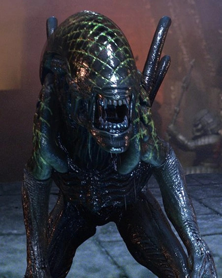
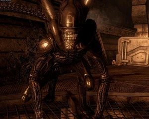
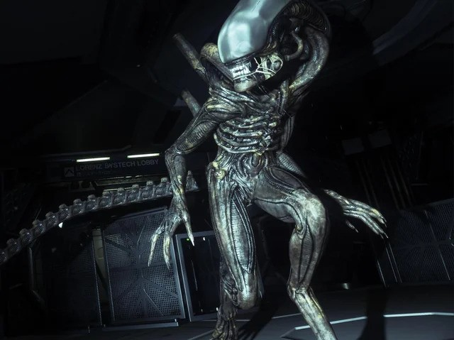
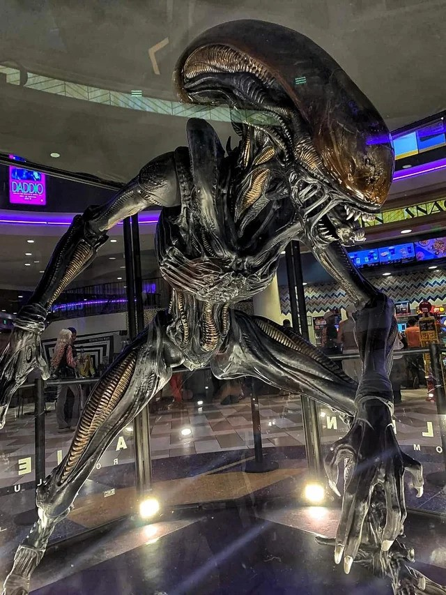

Named Xenomorphs
Alien (1979): Big Chap

This is Big Chap. The first Xenomorph to appear on screen.
If you haven't watched the movie (why are you here, watch the movie), he is the antagonist of the film.
He slowly hunts down each crew member of the ship, Nostromo.
Big Chap is the most iconic one of the Xenomorphs because he is one that brought forth the Alien universe.
In fact, he doesn't even die at the end of Alien. He reappears in Alien: Romulus in a harden-rock case, and is released by scientists.
He does die in Alien: Romulus, but not before killing basically everyone on the research vessel.
So, Big Chap makes sure to go out in a bang, and being an awesome Xenomorph.
Alien Vs Predator (2004): Grid

Grid is a cool Xenomorph in a rather medicore film. He is a Warrior Xenomorph, and a very dangerous one at that.
Grid had single-handly killed two Predators which is a great achievement for him.
During those fights, he got caught in a ever-tightening net which gave him his iconic grid look.
His design, while simple, is very memorable in a very forgettable movie.
Aliens Vs Predator (2010): Six

Now, Six is not part of a medicore piece of media. She is an awesome Xenomorph Warrior in a great game.
Six was branded with the number six because of the number of Xenomorphs that were bred in a lab.
Six is one of the protagonists, and therefore bound to be a very important Xenomorph.
At the end of the Xenomorph campaign, Six becomes a Queen. There, she has a hive and several eggs.
Alien: Isolation (2014): Stompy

Stompy is a regular old Xenomorph Drone like Big Chap with no noticable designs to him.
However, he rivals Big Chap for the most terrifying Xenomorph here.
If anyone reading this has played the game knows exactly how scary Alien: Isolation is. I barely got into the game before quitting because I knew the Stompy was somewhere.
Stompy gets his name from the fact he moves very loudly (like he is stomping around). And it scares the crap out people.
What's really cool about Stompy is that he has two (AI) brains. One brain always knows where the player is. The other brain looks for the player while the other brain gives hints to the player's position.
Alien: Romulus (2024): Scorched

Scorched is the big bad in Alien: Romulus after Big Chap dies.
For most of the film, he is a standard-looking Xenomorph Drone, that is until he is cocooned.
In his cocooned state, one of the protagonists shocks Scorched's dome, leaving a lighting scorched mark on his head.
Of course, Scorched immediately kills the guy with acidic blood (it was a cool scene).
Home Page | Drone | Warrior | Best Xenomorph | Runner